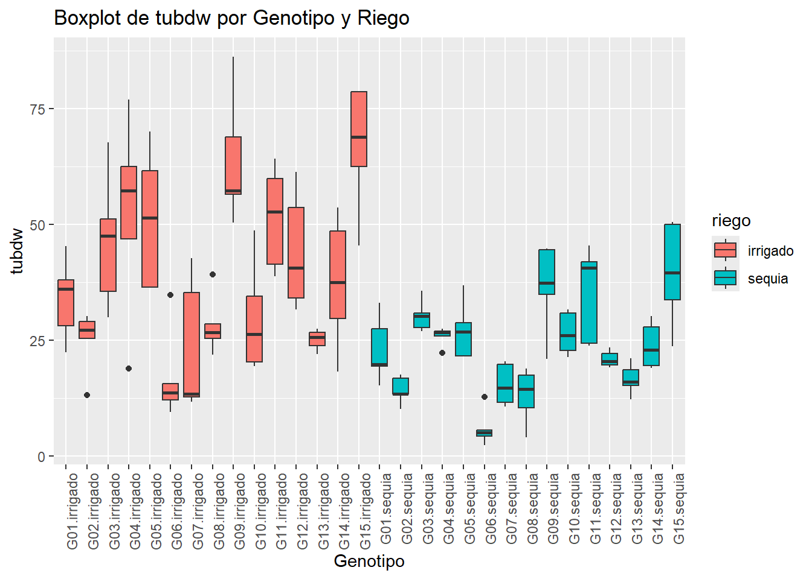
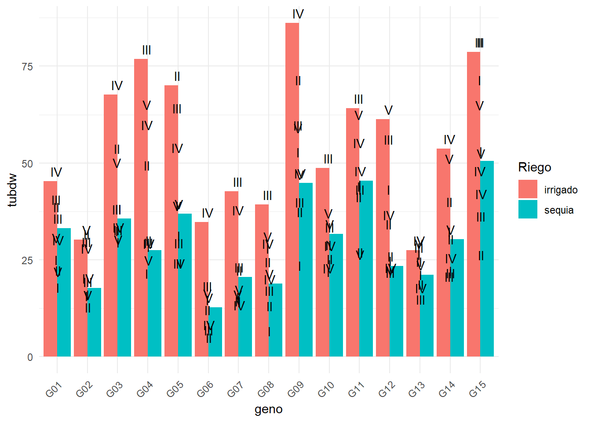
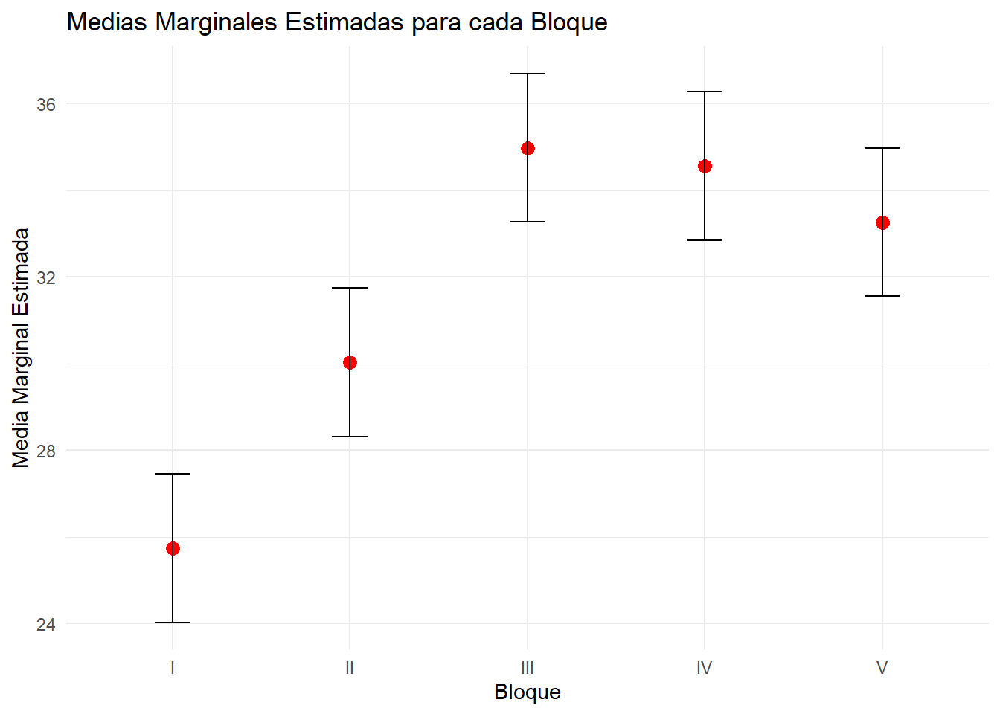
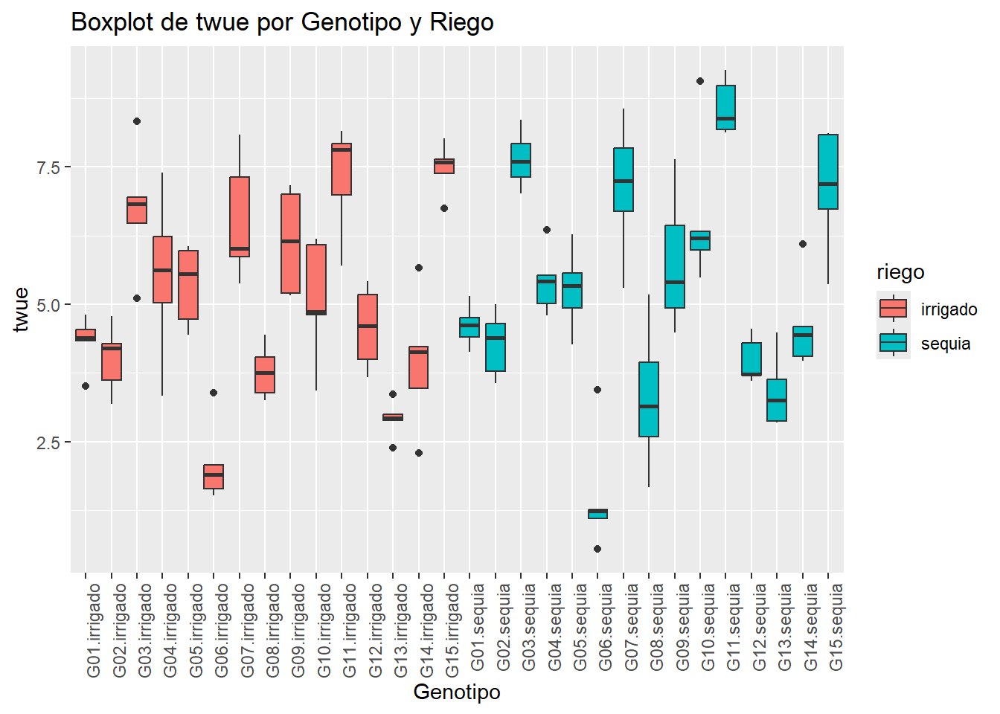
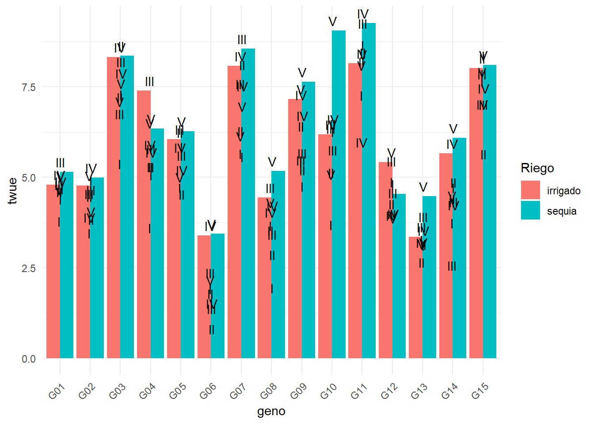

library(readxl)
dat <- read_excel("C:/Users/PC/OneDrive/Desktop/dat.xlsx")
View(dat)Pagina Web_G2
1 INTRODUCCIÓN
La papa es uno de los cultivos más importantes del mundo y un pilar económico para más de 600 mil pequeños agricultores en el Perú, que es uno de los principales productores de este tubérculo en Latinoamérica. Sin embargo, el cambio climático está generando nuevos desafíos en su producción, ya que cada vez se cuenta con menos recursos hídricos para satisfacer la demanda alimentaria de una población en constante crecimiento. Además, la papa es particularmente sensible a la falta de agua, lo cual afecta tanto su rendimiento como la calidad de sus tubérculos el presente estudio busca identificar genotipos de papa que puedan adaptarse mejor a condiciones de sequía, sin perder su capacidad de producir de manera eficiente.
2 DESARROLLO
2.1 Materiales y metodos
Material biológico: Se utilizaron quince (15) genotipos de papa provenientes de poblaciones de mejoramiento del Centro Internacional de la Papa
2.2 Modelo lineal para el Peso seco del tubérculo
2.2.1 Importar data
2.2.2 Modelo lineal
modelo <- lm(formula = tubdw ~ bloque + geno + riego +riego*geno , data = dat)
anova(modelo)Analysis of Variance Table
Response: tubdw
Df Sum Sq Mean Sq F value Pr(>F)
bloque 4 1788.7 447.2 5.0658 0.0008473 ***
geno 14 20528.6 1466.3 16.6111 < 2.2e-16 ***
riego 1 9754.4 9754.4 110.5009 < 2.2e-16 ***
geno:riego 14 2139.7 152.8 1.7313 0.0583468 .
Residuals 116 10239.8 88.3
---
Signif. codes: 0 '***' 0.001 '**' 0.01 '*' 0.05 '.' 0.1 ' ' 12.2.3 box plot
library(ggplot2)Warning: package 'ggplot2' was built under R version 4.4.1ggplot(dat, aes(x = interaction(geno, riego), y = tubdw, fill = riego)) +
geom_boxplot() +
labs(x = "Genotipo", y = "tubdw", title = "Boxplot de tubdw por Genotipo y Riego") +
theme(axis.text.x = element_text(angle = 90, hjust = 1))
2.2.4 comparacion de medias con agicolae
library(agricolae)Warning: package 'agricolae' was built under R version 4.4.1modelo <- lm(tubdw ~ bloque + geno + riego + riego * geno, data = dat)
anova_result <- anova(modelo)
tukey_result <- HSD.test(modelo, "bloque", group = TRUE)
print(tukey_result)$statistics
MSerror Df Mean CV MSD
88.27419 116 31.71713 29.62258 6.722516
$parameters
test name.t ntr StudentizedRange alpha
Tukey bloque 5 3.919003 0.05
$means
tubdw std r se Min Max Q25 Q50 Q75
I 25.74600 14.46801 30 1.715364 4.05 68.86 16.1650 22.330 29.8775
II 30.03300 18.11640 30 1.715364 2.37 78.64 20.2475 25.345 35.9525
III 34.98233 18.81318 30 1.715364 4.32 78.62 19.5375 31.990 42.1625
IV 34.55833 17.79769 30 1.715364 5.68 86.16 21.8975 29.240 45.3800
V 33.26600 16.21417 30 1.715364 12.78 62.54 20.0950 29.375 46.7750
$comparison
NULL
$groups
tubdw groups
III 34.98233 a
IV 34.55833 a
V 33.26600 a
II 30.03300 ab
I 25.74600 b
attr(,"class")
[1] "group"2.2.5 Grafico en ggplot
ggplot(dat, aes(x = geno, y = tubdw, fill = riego)) +
geom_bar(stat = "identity", position = position_dodge()) +
geom_text(aes(label = bloque), position = position_dodge(0.1), vjust = -0.5) +
labs(x = "geno", y = "tubdw", fill = "Riego") +
theme_minimal() +
theme(axis.text.x = element_text(angle = 45,hjust = 1))
2.2.6 Comparación de medias: emmeans
library(emmeans)Warning: package 'emmeans' was built under R version 4.4.1Welcome to emmeans.
Caution: You lose important information if you filter this package's results.
See '? untidy'modelo <- lm(tubdw ~ bloque + geno + riego + riego * geno, data = dat)
emmeans_result <- emmeans(modelo, ~ bloque)
comparaciones <- pairs(emmeans_result)
print(comparaciones) contrast estimate SE df t.ratio p.value
I - II -4.287 2.43 116 -1.767 0.3977
I - III -9.236 2.43 116 -3.807 0.0021
I - IV -8.812 2.43 116 -3.633 0.0038
I - V -7.520 2.43 116 -3.100 0.0202
II - III -4.949 2.43 116 -2.040 0.2536
II - IV -4.525 2.43 116 -1.865 0.3418
II - V -3.233 2.43 116 -1.333 0.6715
III - IV 0.424 2.43 116 0.175 0.9998
III - V 1.716 2.43 116 0.708 0.9544
IV - V 1.292 2.43 116 0.533 0.9838
Results are averaged over the levels of: geno, riego
P value adjustment: tukey method for comparing a family of 5 estimates library(emmeans)
library(ggplot2)
modelo <- lm(tubdw ~ bloque + geno + riego + riego * geno, data = dat)
emmeans_result <- emmeans(modelo, ~ bloque)
emmeans_df <- as.data.frame(emmeans_result)
ggplot(emmeans_df, aes(x = bloque, y = emmean)) +
geom_point(size = 3, color = "red") +
geom_errorbar(aes(ymin = emmean - SE, ymax = emmean + SE), width = 0.2) +
labs(x = "Bloque", y = "Media Marginal Estimada") +
theme_minimal() +
ggtitle("Medias Marginales Estimadas para cada Bloque")
2.3 Modelo lineal para la eficiencia en el uso del agua de los tubérculos (g/l)
2.3.1 Modelo lineal
modelo <- lm(formula = twue ~ bloque + geno + riego +riego*geno , data = dat)
anova(modelo)Analysis of Variance Table
Response: twue
Df Sum Sq Mean Sq F value Pr(>F)
bloque 4 21.91 5.4766 8.0849 8.721e-06 ***
geno 14 412.99 29.4995 43.5494 < 2.2e-16 ***
riego 1 2.03 2.0329 3.0011 0.08587 .
geno:riego 14 16.06 1.1470 1.6933 0.06609 .
Residuals 116 78.58 0.6774
---
Signif. codes: 0 '***' 0.001 '**' 0.01 '*' 0.05 '.' 0.1 ' ' 12.3.2 box plot
library(ggplot2)
ggplot(dat, aes(x = interaction(geno, riego), y = twue, fill = riego)) +
geom_boxplot() +
labs(x = "Genotipo", y = "twue", title = "Boxplot de twue por Genotipo y Riego") +
theme(axis.text.x = element_text(angle = 90, hjust = 1))
2.3.3 comparacion de medias con agicolae
library(agricolae)
modelo <- lm(twue ~ bloque + geno + riego + riego * geno, data = dat)
anova_result <- anova(modelo)
tukey_result <- HSD.test(modelo, "bloque", group = TRUE)
print(tukey_result)$statistics
MSerror Df Mean CV MSD
0.6773802 116 5.167933 15.92573 0.588886
$parameters
test name.t ntr StudentizedRange alpha
Tukey bloque 5 3.919003 0.05
$means
twue std r se Min Max Q25 Q50
I 4.573060 1.796617 30 0.1502642 1.2612832 8.386645 3.398886 4.514494
II 4.903164 1.994059 30 0.1502642 0.5430797 8.357964 3.782650 4.726166
III 5.336811 1.961240 30 0.1502642 1.0953347 8.983201 4.282336 5.268266
IV 5.373428 1.843222 30 0.1502642 1.2418015 9.261978 3.802666 5.484087
V 5.653202 1.768181 30 0.1502642 1.8984364 9.056873 4.409131 5.644904
Q75
I 5.359547
II 6.110777
III 6.667564
IV 6.665507
V 7.078540
$comparison
NULL
$groups
twue groups
V 5.653202 a
IV 5.373428 ab
III 5.336811 ab
II 4.903164 bc
I 4.573060 c
attr(,"class")
[1] "group"2.3.4 Grafico en ggplot
ggplot(dat, aes(x = geno, y = twue, fill = riego)) +
geom_bar(stat = "identity", position = position_dodge()) +
geom_text(aes(label = bloque), position = position_dodge(0.1), vjust = -0.5) +
labs(x = "geno", y = "twue", fill = "Riego") +
theme_minimal() +
theme(axis.text.x = element_text(angle = 45,hjust = 1))
2.3.5 Comparación de medias: emmeans
library(emmeans)
modelo <- lm(twue ~ bloque + geno + riego + riego * geno, data = dat)
emmeans_result <- emmeans(modelo, ~ bloque)
comparaciones <- pairs(emmeans_result)
print(comparaciones) contrast estimate SE df t.ratio p.value
I - II -0.3301 0.213 116 -1.553 0.5302
I - III -0.7638 0.213 116 -3.594 0.0043
I - IV -0.8004 0.213 116 -3.766 0.0024
I - V -1.0801 0.213 116 -5.083 <.0001
II - III -0.4336 0.213 116 -2.041 0.2534
II - IV -0.4703 0.213 116 -2.213 0.1823
II - V -0.7500 0.213 116 -3.529 0.0053
III - IV -0.0366 0.213 116 -0.172 0.9998
III - V -0.3164 0.213 116 -1.489 0.5718
IV - V -0.2798 0.213 116 -1.317 0.6815
Results are averaged over the levels of: geno, riego
P value adjustment: tukey method for comparing a family of 5 estimates library(emmeans)
library(ggplot2)
modelo <- lm(twue ~ bloque + geno + riego + riego * geno, data = dat)
emmeans_result <- emmeans(modelo, ~ bloque)
emmeans_df <- as.data.frame(emmeans_result)
ggplot(emmeans_df, aes(x = bloque, y = emmean)) +
geom_point(size = 3, color = "red") +
geom_errorbar(aes(ymin = emmean - SE, ymax = emmean + SE), width = 0.2) +
labs(x = "Bloque", y = "Media Marginal Estimada") +
theme_minimal() +
ggtitle("Medias Marginales Estimadas para cada Bloque")
3 CONCLUSIONES